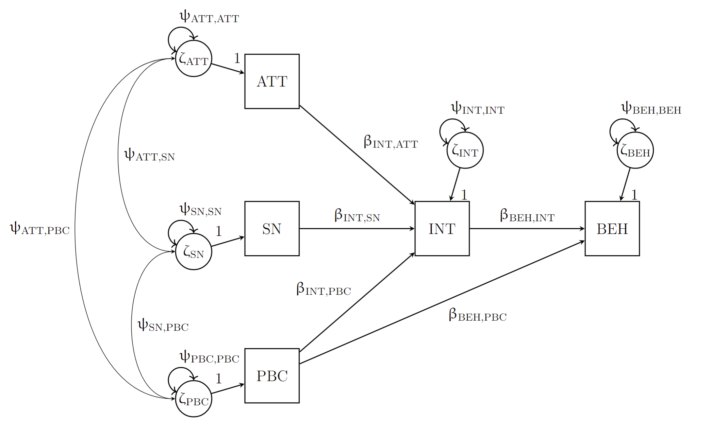
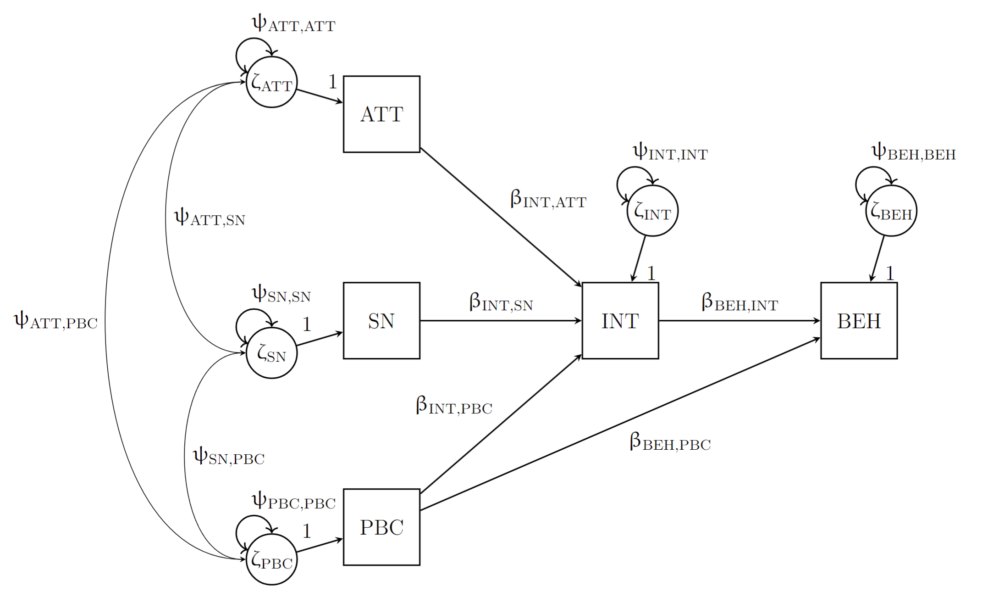
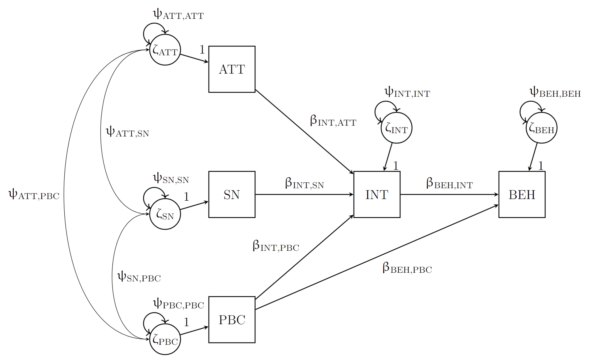

I am a PhD candidate in the research project 'No Data Left Behind: New meta-analytic structural equation models for complex data structures'. This projected is funded through the VIDI grant that was awarded to dr. Suzanne Jak. In this project we aim to broaden the scope of research questions that can be answered through meta-analytical structural equation modeling (MASEM). In particular, I investigate the possibilities of synthesizing raw datasets, instead of summary statistics, when conducting MASEM.
